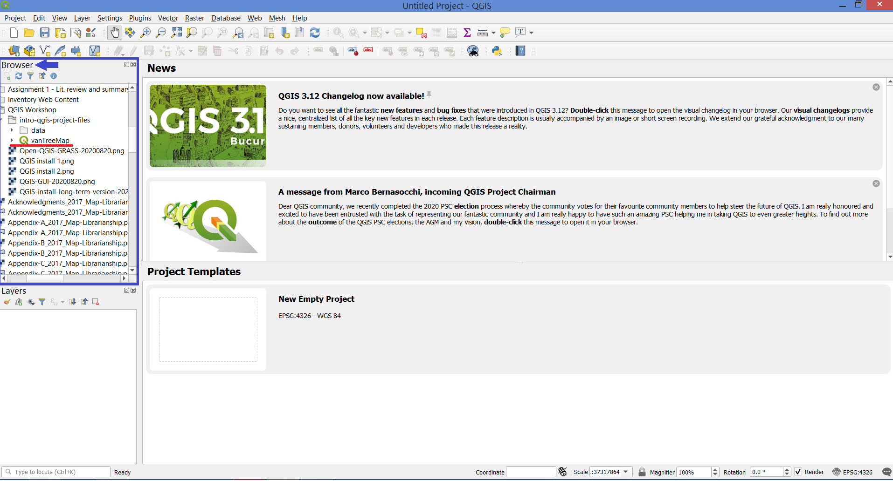

If you haven’t already, Open QGIS 3.10.9 (with GRASS 7.8.3).
In the Browser Panel, navigate to your Desktop, and select your newly extracted folder called intro-qgis-project-files. Inside you’ll see the vanTreeMap project file. Double-click that file to open the project.
